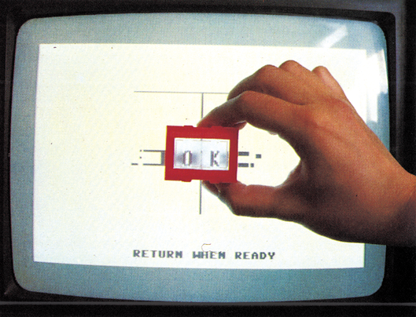
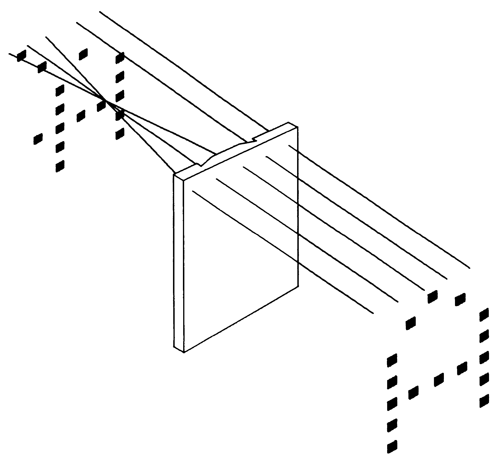
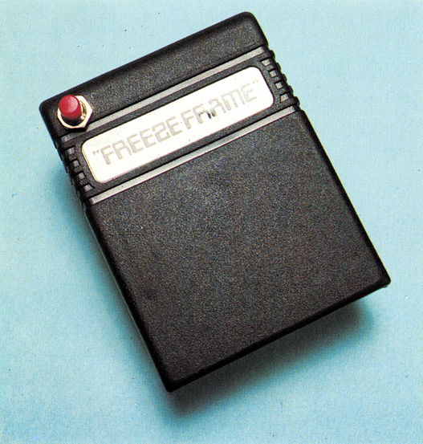

Der ewige Wettlauf
Sie laufen schon um die Wette, seit es Heimcomputer gibt und werden wohl auch bis in alle Zeiten weiterlaufen: die Kopierer und die Kopierschützer. Wird jemals einer den Wettlauf erfolgreich beenden?
Was treibt derzeit die Entwicklungskosten eines Programms enorm in die Höhe? Der Kopierschutz. Branchenkenner vermuten, daß manchmal der Kopierschutz eines Programms komplexer ist und mehr gekostet hat, als das Programm selber. Ganz kurios wird diese Rechnung bei Kopierprogrammen, die kommerziell angeboten werden. Daentwickeltjemand in langer Arbeit Routinen, die alles bisher Dagewesene kopieren sollen, und macht sich kurz darauf daran, einen Schutz zu bauen, der auch diesem Programm standhält und natürlich auch einem Knacker eine harte Nuß aufgibt. Daß die Entwicklung des Schutzes teurer und aufwendiger als die des Kopierprogramms ist, kommt nicht selten vor.
Dies bringt uns gleich zu den Fragen, die uns in diesem Artikel beschäftigen sollen: Wie wird heutzutage geschützt? Wie wird kopiert? Wer liegt augenblicklich vorne im ewigen Wettlauf?
Die Kopierschützer haben sich in den letzten Monaten einiges an neuen Tricks und Gemeinheiten einfallen lassen, um die Kopierer auszuschalten. Insbesondere auf dem Gebiet des Disketten-Schutzes gibt es einige neue Entwicklungen. Neue Schutzmechanismen für Datasettenprogramme gibt es nicht, hier bleiben Autostart und Fastloader die einzigen Möglichkeiten. Deswegen sind gerade die Engländer auf recht skurille Ideen des Hardwareschutzes gekommen, doch darüber später mehr.
Ein Trick, der gegen Ende des letzten Jahres aufkam und bis heute von manchen Firmen gerne verwendet wird, ist das Verändern der Schreib/Lese-Geschwindigkeit. Wie Sie sicherlich wissen, arbeitet die 1541 mit vier verschiedenen Sektordichten: Sehr weit außen werden 21 Sektoren pro Track (Spur), weiter innen nur 17 geschrieben. Jeder dieser Sektordichte ist nun eine Schreib/Lese-Geschwindigkeit zugeordnet. Die Aufzeichnungszeit eines Bits schwankt dabei zwischen 3 und 3,75 Mikrosekunden (Mikro = Millionstel, eine Mikrosekunde entspricht einem Taktzyklus). Die Geschwindigkeit kann über zwei Bit eines Registers in einer der beiden VIAs eingestellt werden. Was liegt näher, als diese Geschwindigkeit vor dem Schreiben von Daten zu verändern? Die entsprechenden Daten können dann nur fehlerfrei gelesen werden, wenn man vor dem Lesen auf die richtige Geschwindigkeit umschaltet.
Tempowechsel
Die ersten dieser Schutzmechanismen sicherten einen ganzen Track, indem dieser komplett in einer der drei »falschen« Geschwindigkeiten geschrieben wurde. Doch schon bald kamen die ersten Kopierprogramme, bei denen Tracks in allen vier Geschwindigkeiten kopiert werden konnten. Der Benutzer mußte nur die Geschwindigkeit dieses Tracks vor dem Kopiervorgang einstellen.
Der Gegenschlag kam jedoch schnell, denn kurz darauf kamen die ersten Kopierschutzverfahren auf, bei denen die Geschwindigkeit auf dem Track mehrmals gewechselt wurde. Lange Zeit waren diese Originale unkopierbar, doch dann trat »Turbonibbler 4.0« auf den Plan. Dieses Sync-orientierte Kopierprogramm analysiert die Geschwindigkeiten, die nach einer Sync-Markierung verwendet:'werden. Somit kann es die meisten der so geschützten Originale kopieren.
Doch die Schützer ließen vom Thema des Geschwindigkeits-Wechsels nicht ab. Der neueste Trick ist das Wechseln der Geschwindigkeit mitten in einem Block. Hier streiten sich die Experten noch, ob dieser Schutz kopierbar ist oder nicht, im Augenblick ist uns zumindest kein Programm bekannt, das ihn kopieren könnte. Aber es hieß ja auch von anderen Schutzmethoden, daß sie nicht kopierbar seien.
So behaupteten wir vor einem Jahr noch selbstsicher, daß parallele Halbspurformatierungen unkopierbar seien. Dieser komplizierte Ausdruck beschreibt einen technisch recht einfachen Schutz: In der Kopieranstalt des Herstellers wird die Original-Diskette mit einem Schreib-/Lesekopf beschrieben, der so breit wie zwei normale Spuren ist. Auf die Daten der Spuren 1 bis 34 hat das keine Auswirkungen. Die Spuren 35, 35,5 und 36 sind nun aber identisch und exakt parallel zueinander und bilden einen sogenannten »Fat Track« (Dicke Spur). Beim Lesen der Daten der Spur 35 kann der Schreib-/ Lesekopf also halbspurweise nach innen und wieder nach außen verschoben werden, ohne daß Lesefehler auftreten. Bis vor kurzem war dieser Schutz unkopierbar, doch inzwischen sind in Amerika einige Utilities aufgetaucht, die solche Fat Tracks softwaremäßig erzeugen. Wie diese genau funktionieren, konnten wir noch nicht in Erfahrung bringen, weil die Utilities in Deutschland, aufgrund der unterschiedlichen Taktfrequenz des amerikanischen C 64, nicht funktionieren.
In die Falle gelockt?
Ende letzten Jahres tauchte ein weiterer Kopierschutz in Amerika auf, der sich hauptsächlich an Sync-orientierten Kopierprogrammen rächen sollte. Es handelt sich um die sogenannte »Sync-Falle«. Dieser Schutz nutzt die Tatsache aus, daß die 1541 einige Taktzyklen benötigt, bis sie von Schreib- auf Lesebetrieb umschalten kann. Ein Sync-Copy darf die ersten Bits der nächsten Sync-Markierung nicht überschreiben und muß den Schreibvorgang vorzeitig abbrechen. Deswegen kann kein Sync-Copy das letzte Byte vor der Sync-Markierung korrekt kopieren. Der Kopierschutz besteht nun darin, diesen einem Byte einen bestimmten Wert zu geben und abzufragen.
Natürlich kann man nicht nur eine, sondern auch mehrere Syncs auf einem Track nach diesem Verfahren sichern. Aus oben genannten technischen Gründen ist aber mindestens eine Sync immer ungesichert. Neben allen seriellen Kopierern haben auch die Burst-Copys extreme Schwierigkeiten, diesen Schutz zu kopieren, Ein Burst-Copy kann auch nicht einfach drauflos lesen, sondern muß sich an einer Sync auf dem Track orientieren. Erwischt es dabei eine gesicherte Sync, wird der Track nicht korrekt kopiert. Auf einem Sync-Fallen-gesicherten Track besteht also eine Chance von 1:41 den Track zu kopieren, denn es gibt normalerweise 41 gesicherte Syncs und eine ungesicherte (42 Syncs entspricht 21 Sektoren wie auf den Spuren 1 bis 17).
Etwas älter, aber immer noch sehr beliebt, ist das »Vernetzen« von Tracks. Die Tracks werden so speziell formatiert, daß einzelne Sektoren nebeneinanderliegen. Sektor 0 auf Spur 1 liegt also direkt neben Sektor 0 auf Spur 2 und dieser wiederu neben Sektor 0 auf Spur 3... Das normale 1541-Format kennt diese saubere Anordnung der Sektoren nicht. Jeder Track wird einzeln formatiert, die Anordnung der Sektoren nebeneinander wird gar nicht bearbeitet und ist rein zufällig. Zwischen Original und Kopie kann man nun unterscheiden, indem man einen Block eines Tracks liest, den Kopf auf einen anderen Track fährt und dann einen anderen Block liest. Die Zeitdauer, die für diesen Vorgang benötigt wird, ist aufgrund der Anordnung der Sektoren bekannt und kann mit der gemessenen Zeit vergli+ chen werden. Weicht die gemessene Zeit vom gespeicherten Wert ab, hat man es mit einer Kopie zu tun, bei der die Sektoren nicht richtig angeordnet sind. Dieser Schutz ist auch heute noch recht schwer zu kopieren, nur wenige Kopierprogramme kommen damit klar.
Die neuen Kopierprogramme
Damit wären wir auch schon bei den anderen Wettbewerbsteilnehmern, den Herstellern der Kopierprogramme. Hier gab es im letzten Jahr unterschiedliche Trends. Die Amerikaner kopieren grundsätzlich anders als die Deutschen und die wiederum anders als die Engländer.
England ist das gelobte Land der Datasette, dort werden Unmengen von Spiele-Kassetten verkauft. Disketten wird man dort zwar auch los, doch die Resonanz beim Publikum ist noch schwach. Dies mag zum Teil auch daran liegen, daß Programme auf Kassetten wesentlich billiger sind als auf Disketten.
In England verkaufen sich deswegen Kassetten-Kopierprogramme besonders gut. Diese Programme schaufeln aktuelle Kassetten-Originale auf Diskette um und machen sie für Diskettenbetrieb lauffähig, dort natürlich ohne jeden Kopierschutz.
In Amerika hingegen ist die Datasette praktisch unbekannt, dort wird grundsätzlich mit Diskette gearbeitet. In den Staaten gibt es fast ein Dutzend Firmen, die sich auf die Produktion von Kopierprogrammen beschränken. Diese haben jeweils ein ganzes Spektrum unterschiedlicher Kopierprogramme auf Lager. Die Amerikaner haben nämlich die Eigenart, keine universellen Kopierprogramme zu schreiben, sondern sich für jeden Schutz ein eigenes Programm auszudenken. Und wozu sollte man den Schutz dann noch kopieren? Es ist wesentlich einfacher, wenn das vermeintliche Kopierprogramm den Schutz auf dem Original einfach ausschaltet. Dann kann man mit einem einfachen Diskcopy das Original kopieren. Solche Cheat-Copies (vom englischen: to cheat — betrügen) werden dann mit wohlklingenden Namen wie »Parameter Copy«, »Patch« oder »Keymodule« bezeichnet. Natürlich gibt es auch echte Kopierprogramme in den Staaten, dort ist die Entwicklung aber längst nicht soweit wie in Europa. Meistens werden dort große Software-Pakete angeboten: Mehrere Kopierprogramme zusammen mit einer großen Zahl von Cheat-Copies für die gängigen Originale auf einer Diskette.
Diese Cheat-Copies haben natürlich den Nachteil, daß sie brandneue Original-Programme nicht kopieren können. Die Software-Firmen sind vorsichtig geworden und modifizieren von Mal zu Mal ihren Kopierschutz. Man muß halt so lange warten, bis ein Kopierprogramm für eben diesen Schutz erscheint.
Außerdem empfehlen sich diese Pakete für deutsche Anwender im Augenblick nicht so sehr, da Bestellungen in Amerika recht kompliziert, langwierig und nicht zuletzt auch teuer sind. Zoll und Porto schlagen da ganz schön zu Buche. Manche der amerikanischen Firmen sind jetzt aber auch auf Europa aufmerksam geworden und wollen versuchen, auch hier ihre Programme an den Mann zu bringen. Wir werden Sie unter der Rubrik »Aktuell« über neue Produkte, die hier bei uns erhältlich sind, auf dem laufenden halten.
Keine Probleme mit der Beschaffbarkeit gibt es bei den Programmen der holländischen Firma Eurosystems.
Mit den »Turbonibblern«, von denen es die Versionen 1 bis 4 gibt, liegt eine ganze Reihe hervorragender, serieler Kopierprogramme vor. In Holland meint man, daß auf diesem Gebiet die Entwicklung mit »Turbonibbler 4.0« abgeschlossen sei. Das neueste Produkt, »Burstnibbler 1.0«, arbeitet nur noch parallel, der Benutzer muß ein Zusatzkabel zwischen Laufwerk und Computer schalten. In einer Vorversion von »Burstnibbler«, die wir testen durften, erwies es sich als sehr starkes Programm: Sync-Fallen konnten beispielsweise ohne weite. res kopiert werden. Bei Geschwindigkeitswechseln auf einer Spur muß der »Burst-Nibbler« passen, für diese Fälle wird aber umsonst der »Turbonibbler 4.0« mitgeliefert, der diesen Schutz ohne weiteres beherrscht.
Der Trick mit der Linse
In England kann man praktisch jedes Kassettenprogramm irgendwie kopieren. Wenn kein Kopierprogramm hilft, verbindet man mit einem Adapterstecker zwei Datasetten und erhält so eine 1:1-Kopie des Originals. Gegen solche Methoden ist praktisch kein Kraut gewachsen. Doch dann kam vor einem dreiviertel Jahr eine englische Firma auf eine verrückte Idee: Das einzige Peripheriegerät, für das es bisher keinen Kopierschutz gibt, ist der Monitor beziehungsweise Fernseher. Wenn es eine Methode gäbe, das Bild irgendwie zu schützen, daß nur Besitzer eines Originalprogramms etwas auf dem Schirm sehen könnten...
Nach langem Denken fand man eine Lösung, die bei einigen englischen Softwarefirmen erst auf zaghafte, dann aber immer größere Resonanz gestoßen ist: Lenslok.
Lenslok ist eine kleine Plastiklinse mit Prismen, die jedem Originalprogramm beiliegt. Beim Starten des Programms werden auf dem Bildschirm zwei Buchstaben dargestellt. Diese sind allerdings nach einem bestimmten Verfahren verschlüsselt und können nur mit dem Lenslok entziffert werden (Bild ]). Erst wenn diese beiden Buchstaben korrekt über die Tastatur eingege'ben werden, läuft das Programm weiter. Nach drei Fehleingaben wird ein Reset ausgelöst.

Das Funktionsprinzip von Lenslok ist verblüffend einfach, wie auch Bild 2 zeigt: Die Buchstaben werden in Streifen aufgelöst, die miteinander vertauscht werden. Die Linse des Lenslok bringt diese Streifen nun wieder in die richtige Reihenfolge, die Buchstaben werden (hoffentlich) wieder lesbar.

Es gibt mehrere Millionen Möglichkeiten, eine Lenslok-Linse zu produzieren. Damit ist gesichert, daß für unterschiedliche Programme auch unterschiedliche Linsen geliefert werden. Mit der Linse zu »Music System« kann man beispielsweise nicht »Price of Magik« spielen und umgekehrt.
Lenslok bietet sicherlich einige Vorteile für den Anwender: So braucht ein Lenslok-gesichertes Programm nicht mit irgendeinem anderen obskuren Kopierschutz gesichert werden. Der Anwender kann also Sicherheitskopien der teuer gekauften Software anfertigen.
Obwohl Lenslok von der Idee her nicht schlecht ist, kann die Ausführung nicht überzeugen. Oft genug muß man die Buchstaben raten, da sie sehr schlecht lesbar sind. Der ehrliche Anwender ist dann wieder der betrogene, weil er sich mit dem Lenslok herumschlagen muß. Für einen Knacker ist es sicherlich kein Problem, die Lenslok-Routine aus dem Programm auszubauen. Die Raubkopie ist dann anwenderfreundlicher als. das Original.
Inzwischen hat man es mit dem Lenslok übertrieben: Die englische Firma Level 9 verkauft das Lenslok-gesicherte Kassetten-Adventure »Price of Magik«. Das Programm ist mit Autostart und Turbo-Lader gesichert, also kann sich der Anwender keine Sicherheitskopie anlegen. Außerdem wurde nicht der Programmstart, sondern einige der Räume mit Lenslok gesichert: Bevor man diese Räume betreten kann, wird die Lenslok-Prozedur durchgegangen. Das mindert die Spielmotivation gewaltig. Warum man das so umständlich gemacht hat? Die Antwort lautet »Freeze Frame«.
Seit dem Erscheinen der zweiten Version von Freeze Frame (Bild 3) sind die britischen Software-Produzenten in Aufruhr. Bisher ist keine Methode gefunden worden, dieses Modul auszutricksen. Freeze Frame (freeze = einfrieren) sichert auf Knopfdruck den Speicherinhalt des C 64 auf Kassette oder Diskette und schreibt einen kleinen Lader dazu, der es ermöglicht, den Inhalt ohne Freeze Frame zurückzuladen. Mit Freeze Frame läßt sich bisher jedes Programm kopieren, das vollständig im Speicher steht und nicht nachlädt.

Einige britische Firmen suchen nun verzweifelt nach Schutzmöglichkeiten gegen Freeze Frame. Neben dem oben beschriebenen Lenslok hat man sich noch einen anderen Trick einfallen lassen: Viele Kopierer arbeiten mit Diskettenlaufwerken und wollen von Kassetten-Programmen mit Freeze Frame Disketten-Versionen erstellen. Dies kann man nun dadurch abfangen, daß das Programm laufend überprüft, ob ein Diskettenlaufwerk angeschlossen ist. Ist das der Fall, wird ein Reset ausgelöst oder das Programm hängt sich auf. In diesen Fällen läßt sich aber immerhin noch ein Kassetten-Backup per Freeze Frame anfertigen.
Freezer auf dem Vormarsch
Freeze Frame ist in ganz Europa ein großer Erfolg. So gibt es inzwischen viele verschiedene Freezer von allen möglichen Firmen. Manche sind in Toolkits integriert, andere arbeiten ähnlich zum Freeze Frame. Dabei ist das Leistungsspektrum stark gestreut. Allerdings konnten wir bisher keinen Freezer entdecken, der Freeze Frame übertrifft. Trotzdem ist das Kapitel Freezer noch nicht abgeschlossen. Sicherlich werden in einigen Monaten noch bessere Produkte erscheinen, die vielleicht das Editieren des Speichers oder das Sichern des Floppy-RAMs ermöglichen.
Geht es auch ohne Kopierschutz?
Im Augenblick gibt es einen richtigen Streit zwischen den Softwarefirmen, ob Kopierschutz überhaupt notwendig ist. Die meisten der Firmen bestehen auf dem Standpunkt, daß ein Produkt ohne Kopierschutz nicht verkaufbar sei, weil es jedermann kopieren würde. Doch das Gegenteil wurde oft genug bewiesen: Gerade auf dem PC-Bereich verkaufen sich ungeschützte Programme verblüffend gut: Turbo-Pascal und Wordstar zählen beispielsweise zu den absoluten Rennern für CP/M- und MS-DOS-Computer. Auch auf dem Atari ST geht's ohne Schutz: Auf der diesjährigen SCES in Chicago verlautete Batteries Included, daß das ungeschützte Zeichenprogramm »Degas« eines der meistverkauften Produkte sei. Die direkte Folge: Bl. wird kein Programm mehr schützen.
»Kopierschutz ist Betrug am Anwender!« Auf diesen Standpunkt stellen sich einige der Clubs und User-Groups in den USA. Dort gibt es eine regelrechte Massenbewegung von Computer-ÄAnwendern, die sich weigern, ein kopiergeschütztes Programm zu kaufen. Schließlich ist der Satz: »XYZ ist nicht kopiergeschützt!« in Amerika eine der besten Aussagen, mit der man für ein Produkt werben kann.
Auch wir in der Redaktion stellen uns auf den Standpunkt, daß ein gutes Anwendungsprodukt nicht kopiergeschützt sein sollte. Der beste »Kopierschutz« sind immer noch ein ordentliches Handbuch und ein vernünftiger Kundendienst. Für manchen Anwender ist es doch wesentlich logischer, sich eine Raubkopie von Handbuch und Diskette anzufertigen, als sich ein teures Original zuzulegen, wenn er in beiden Fällen vom Hersteller keinerlei Kundendienst bei auftauchenden Problemen erhält.
Ein weiterer Punkt, der uns bei manchen Software-Firmen sehr komisch vorkommt: Kauft man ein ÖOriginalprogramm für 100 Mark, soll man für eine Sicherheitskopie wiederum 20 Mark auf den Tisch legen. Wäre es da nicht einfacher, dem Original eine Sicherheitskopie beizulegen? Die _Produktionskosten würden dadurch sicherlich nicht wesentlich steigen.
Freilich anders sieht es bei Spielen aus. Diese lassen sich in 95 Prozent der Fälle auch ohne Anleitung spielen und einen Kundendienst braucht man so und so in den wenigsten Fällen. Wären Spielprogramme nicht geschützt, würde hier die Software-Piraterie sicherlich stärker zuschlagen. Solange aber auf ein verkauftes Spiel an die 20 Kopien kommen, ist an eine Aufgabe des Kopierschutzes auf diesem Gebiet kaum zu denken. Außerdem ist der Verlust eines Spielprogramms bei weitem nicht so tragisch wie der eines Anwendungsprogramms, das täglich dringend benötigt wird und von dem man einige Sicherheitskopien in Reserve haben sollte. Allerdings sollte auch hier der Kopierschutz nicht in solchen Eskapaden wie Lenslok gipfeln, die Knacker so und so vor kein Problem stellen, dem Spieler aber, der sich ein Originalprodukt gekauft hat, eine optische Denksportaufgabe _stellen.
Ein Fazit läßt sich mit Sicherheit ziehen: Durch einen Kopierschutz auf Diskette läßt sich Piraterie nicht eindämmen. Wer kopieren will, kann früher oder später auch kopieren. Damit ist der Kopierschutzeigentlich nur lästige Nebenerscheinung für den Anwender. Und daß es auch ohne geht, ist von einigen Firmen schon bewiesen worden.
(bs)Der Wettlauf ist noch nicht entschieden. Noch liegen die Software-Firmen knapp vorne, aber die Kopierer holen immer weiter auf. Mindestens 90 Prozent der aktuell erscheinenden Programme können entweder per Freeze Frame oder durch ein Disketten-Kopierprogramm kopiert werden. Vor einigen Monaten war dieser Prozentsatz sehr viel geringer. Außerdem wird in Amerika fleißig an Hardware-Entwicklungen gearbeitet, die Kopierprogramme in den Schatten stellen sollen. Schon seit November angekündigt, aber immer noch nicht erschienen, ist »Shadow«, eine Zusatzplatine für die 1541, die sie zur reinen Kopiermaschine umrüsten soll. Die Herstellerfirma verspricht in der Werbung, jedes auf dem Markt befindliche Diskettenprogramm kopieren zu können. Gesehen hat den Shadow aber noch niemand.
Der Einfallsreichtum der Schützer und Kopierer scheint fast unbegrenzt zu sein. Kaum vergeht ein Monat, daß nicht ein neuer Kopierschutz auftaucht oder ein alter in modifizierter und erweiterter Form verwendet wird. Das Rennen geht weiter — wir werden es für Sie weiterhin verfolgen.
(bs)Kleines Kopier-Lexikon
Sync — Kurzbezeichnung für Snychron-Markierung. Eine Ansammlung von $F-Bytes auf der Diskette, die dem Laufwerk mitteilt, daß nun ein neuer Block oder ein neuer Header beginnt.
Sync-Copy — Ein Kopierprogramm, das sich an den Synchron-Markierungen orientiert. Der serielle Bus ist zu langsam, um einen Track in einer Umdrehung einzulesen, deswegen müssen kleinere Teilstücke gelesen und geschrieben werden. Ein solches Teilstück wird am Anfang und am Ende durch jeweils eine Sync begrenzt.
Burst-Copy — Ein Kopierprogramm, das mit einem parallelen Kabel arbeitet und einen Track in einer Umdrehung am Stück einlesen kann.
(bs)